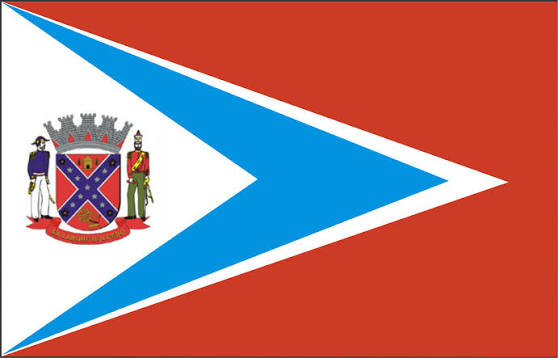

Sobre Mim
Olá, meu nome é Rogeidi Vela e sou da Venezuela. Estou morando no Brasil há três anos com minha família, que é composta por meu esposo, meu filho e minha filha. Sempre tive interesse em estudar programação e agora comecei com esta grande oportunidade de estudar na BYU em português. Espero aprender muito e poder encontrar um emprego com as habilidades aprendidas. Gosto muito de passar tempo com a minha família e praticar esportes.

Americana SP

Bandeira Oficial de Americana sp
Americana é um município brasileiro localizado no interior do estado de São Paulo, integrante da Região Metropolitana de Campinas. Fica a cerca de 126 quilômetros da capital paulista e destaca-se por sua alta qualidade de vida e forte desenvolvimento econômico.
pontos Turísticos
- Parque Ecológico Municipal (Cidinha Ravera): Um dos zoológicos mais importantes e visitados do interior paulista, excelente para famílias.
- Jardim Botânico Municipal: Espaço ideal para caminhadas, que abriga também o Orquidário Municipal e uma grande variedade de árvores nativas.
- Parque Aimaratá: Focado em turismo rural, oferece pesca esportiva, trilhas ecológicas e atividades em contato com a natureza.
- Praia dos Namorados: Área às margens da Represa de Salto Grande, muito procurada para caminhadas e para assistir ao pôr do sol.
- Basílica Santo Antônio de Pádua: Uma igreja monumental em estilo neoclássico, que possui uma das maiores cúpulas pintadas à mão do país.
- Casarão do Salto Grande (Museu Histórico): Antiga sede de fazenda do século XIX que preserva a história da fundação da cidade e do período colonial.
- Observatório Astronômico Municipal (OMA): Ótimo local para visitas noturnas agendadas, focado na observação de astros e divulgação científica.